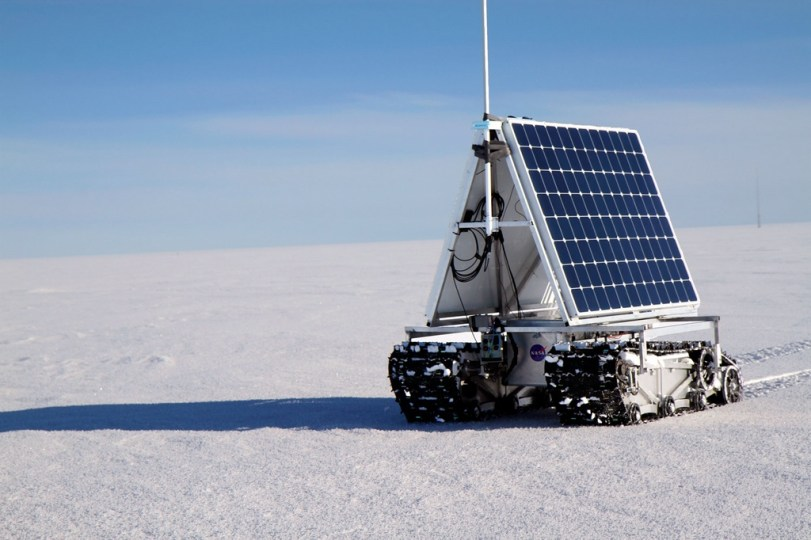
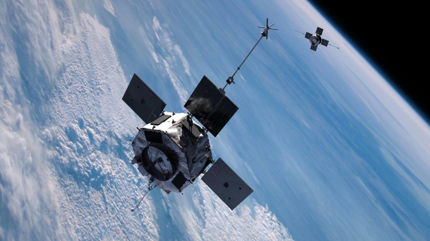

САТ-СПАСЁМ АРТИКУ ОТ ТАЯНИЯ
Наш проект заключается в том ,что из-за глобального потепленя тает арктика и если так будет продалжаться ,то может чеез нес-
колько десятков лет арктики не станет!

Чтобы спасти Арктику мы создали комнанию САТ.Будет спутник который будет фотографировать Арктику и если заметит какою-ту трещину на льду ,то вызовт
робота,который находится на льду.Робот булет подъезжать к трещине и проверять толщину льда.Если трещина глубокая то робот сообщит об этом людям

Робот также будет брать пробу льда
сат2019